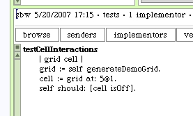

Back to our unit test. We were working on the GridTestCase class.
This new test method only needs to call our demo grid creator to have a grid object to test. A simple check that the target cell is currently off will be fine for now.
We should run the unit tests to ensure that our methods are at least running.